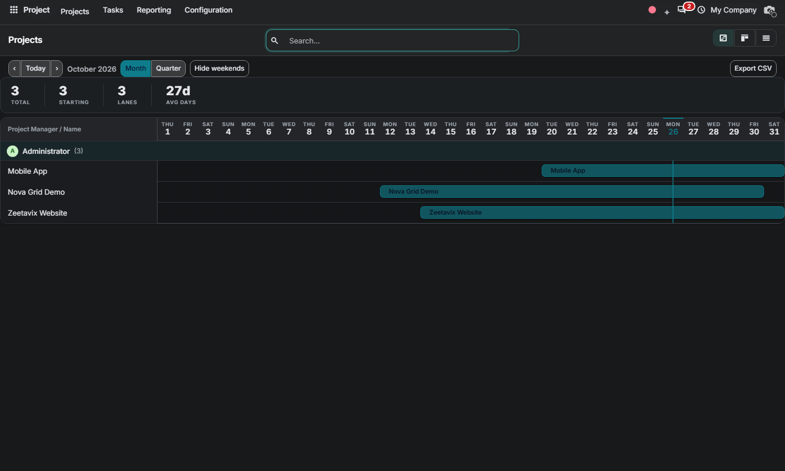

Projects — the whole portfolio at a glance
Click and drag any bar to move it; grab its edges to resize. Dates snap to days and write back through a guarded server API. Projects without a start date stay out of the timeline: set one to plan them.

Free Odoo 20.0 Community • By Zeetavix
Nova Project Gantt brings the Enterprise-style timeline to Community projects — rebuilt from scratch: sections by project manager, one lane per project, bars from start to expiration date. Drag to reschedule, stretch to re-plan, and keep every deadline honest.
Click and drag any bar to move it; grab its edges to resize. Dates snap to days and write back through a guarded server API. Projects without a start date stay out of the timeline: set one to plan them.
The timeline follows your backend theme: elevated header band, dimmed weekends, a crisp today line and a theme-aware accent.

Nova Gantt (bundled engine, auto-installed dependency) • project
By Zeetavix — https://zeetavix.com
Version: 20.0.1.0.0
License: LGPL-3 (free and open source)
Price: Free
Dependencies: nova_gantt, project
Built for: Odoo 20 Community — no
Enterprise code used or required.
Install: drop the nova_project_gantt
folder in your addons path, update the apps list,
install. Installing this module pulls in the nova_gantt engine automatically.
Support: support@zeetavix.com — found a bug? open a GitHub issue